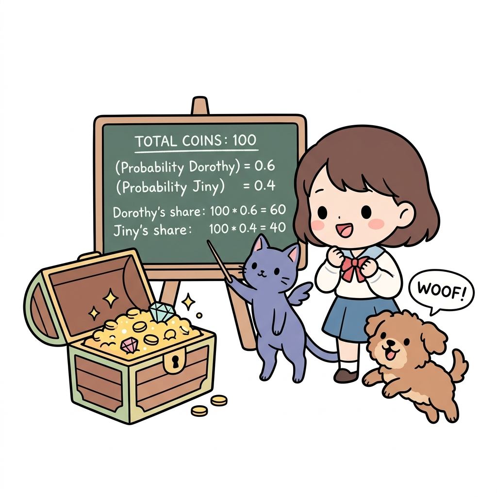
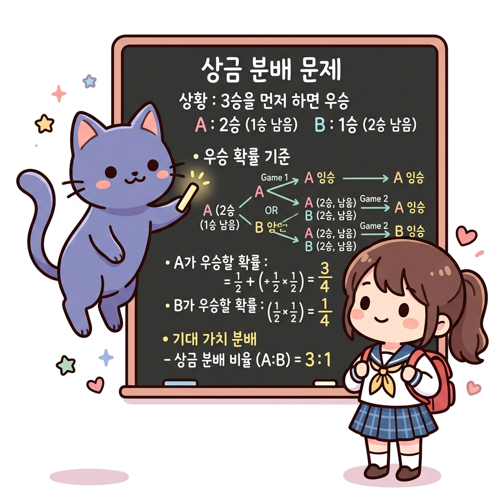
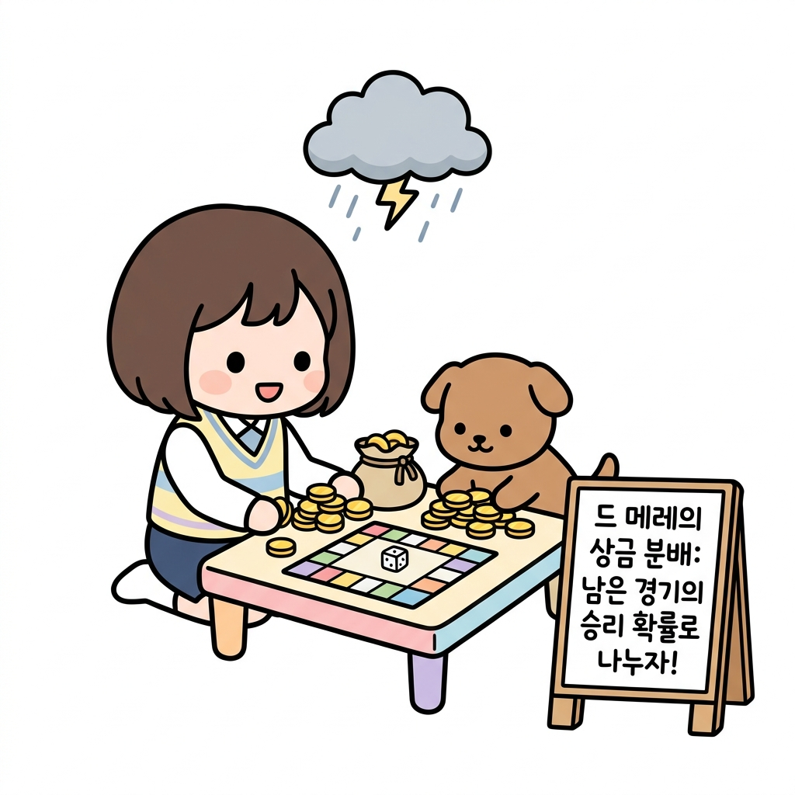
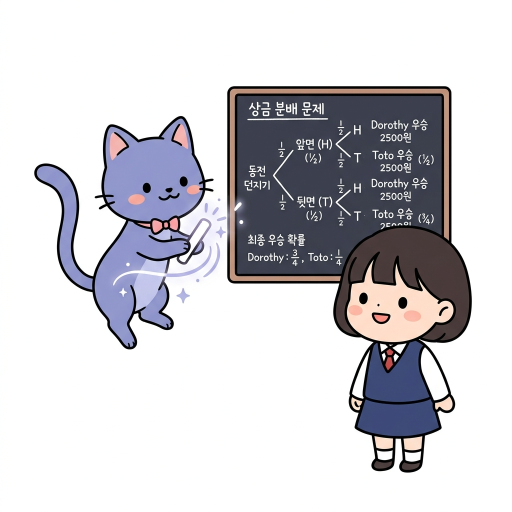
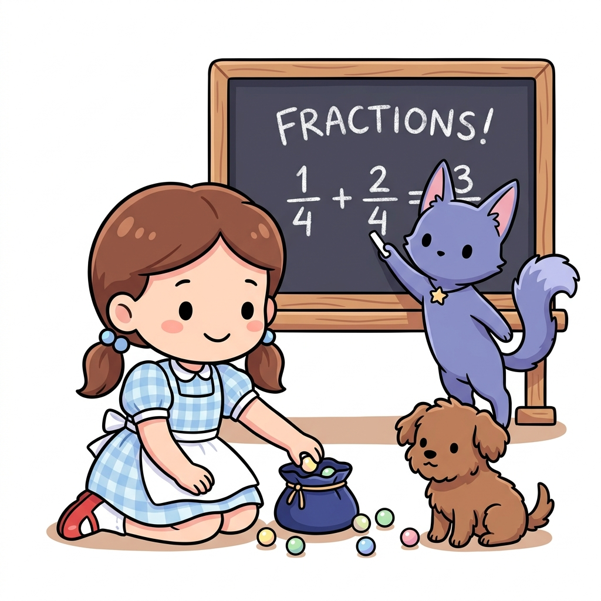
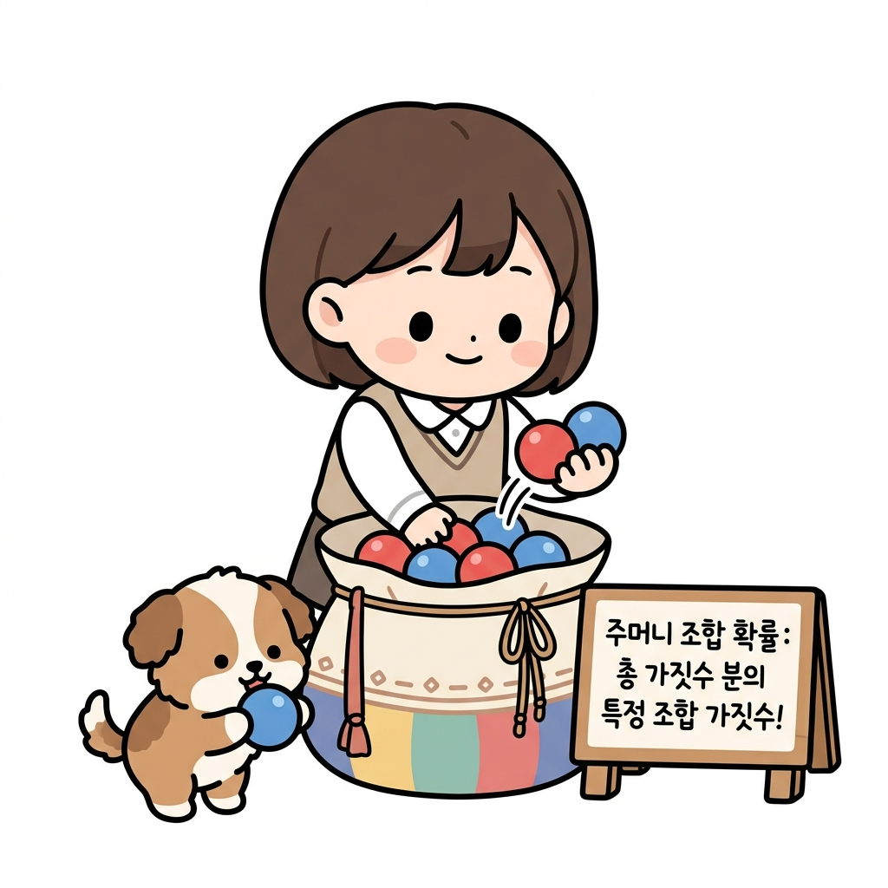
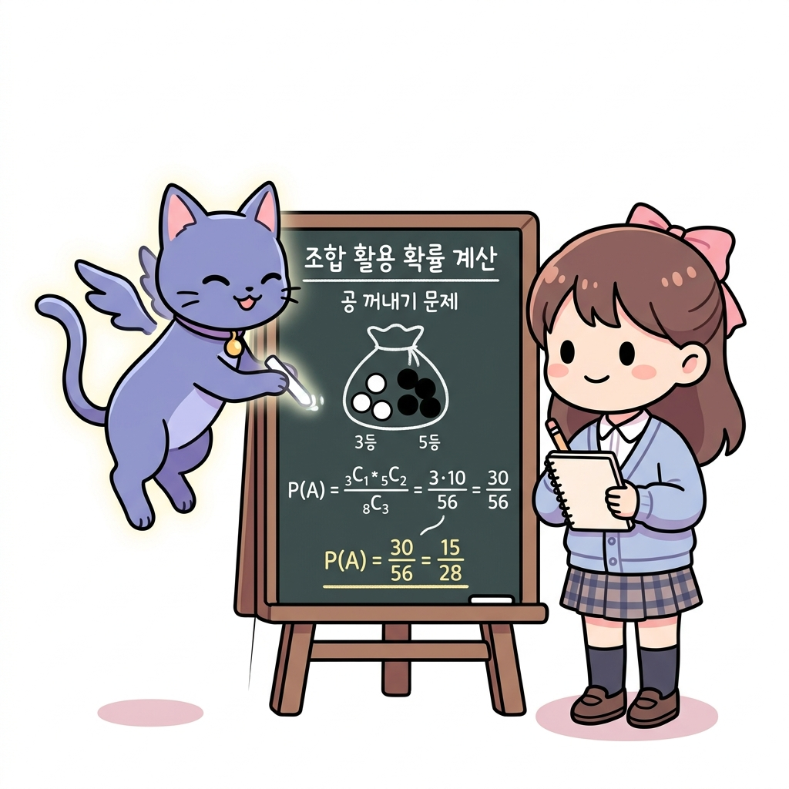
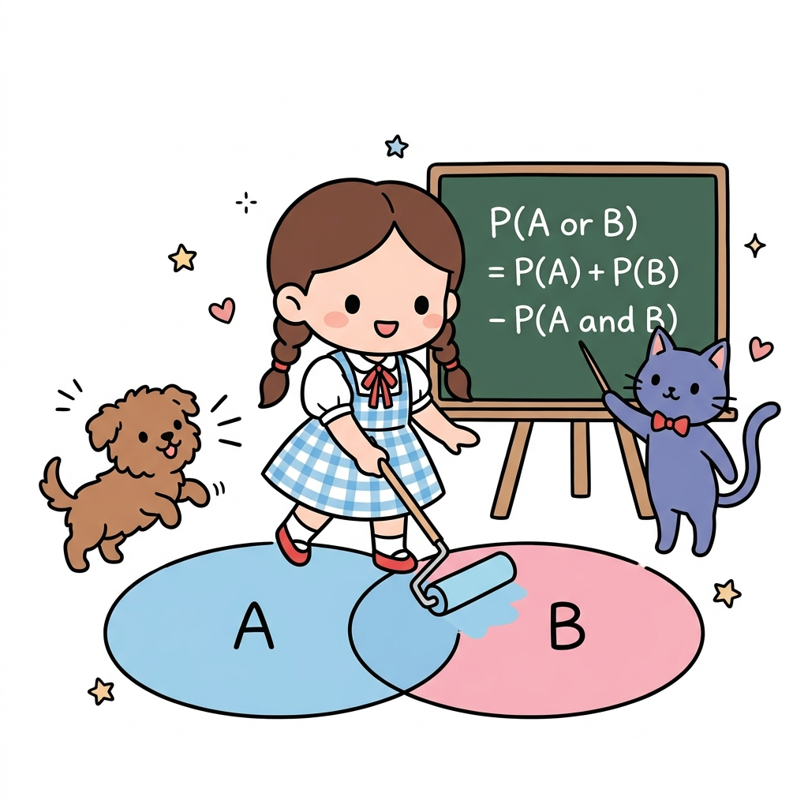
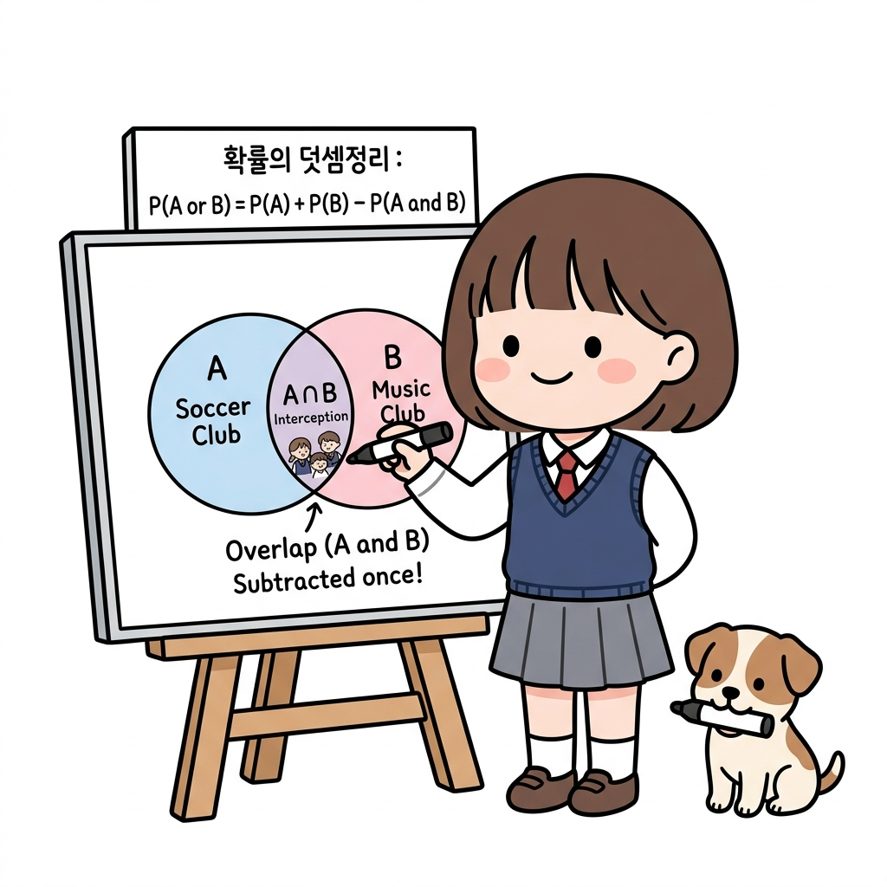
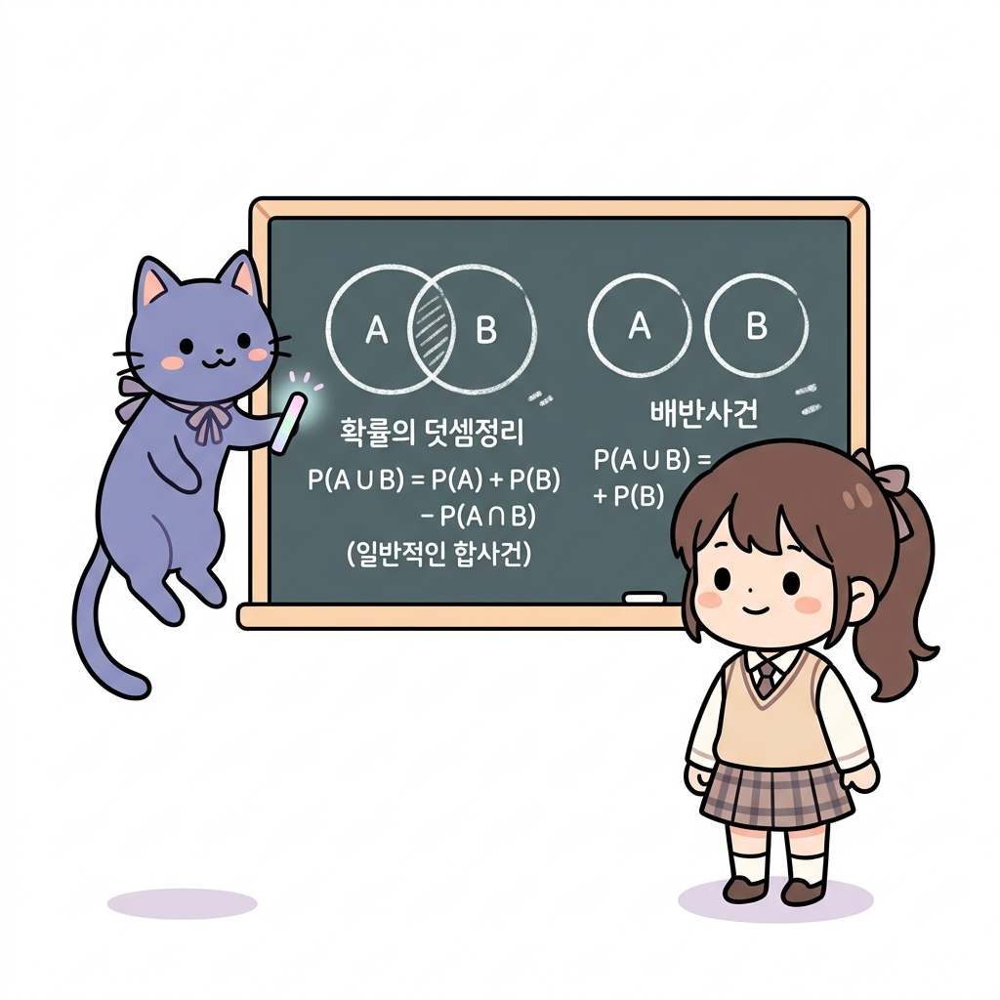

02.10 확률의 역사와 덧셈정리 (조합 활용 확률 계산)
이 장에서는 확률의 역사와 덧셈정리 (조합 활용 확률 계산)에 관한 기초부터 심화 개념들을 유기적으로 결합하여 학습합니다.
02.10.1 확률의 역사와 상금 분배 문제

그림 02-10-1 중단된 보물 상자 게임의 남은 기대 점수에 맞춰 금화를 공정하게 분배하는 법을 강의해주는 지니와 도로시수학의 오랜 난제였던 상금 분배 문제(Problem of Points)와 확률 이론의 역사적 태동을 알아봅니다. 게임이 도중에 중단되었을 때, 지금까지의 점수가 아닌 ‘앞으로 이길 기댓값’에 비례하여 금화를 공평하게 나누는 파스칼과 페르마의 명쾌한 해법을 도로시의 보물상자 분배장과 함께 배워봅시다!
1. 학습 목표
- 확률 이론의 태동과 역사적 배경을 파악한다.
- 파스칼과 페르마가 고민했던 ‘상금 분배 문제’를 이해하고 설명할 수 있다.
- 기대값과 중단된 게임에서의 공정한 상금 분배 확률을 계산할 수 있다.
2. 핵심 개념
(1) 확률의 태동과 역사
- 신탁의 도구: 고대인들은 동물의 복사뼈나 주사위를 던져 신의 뜻을 묻는 데 사용하였습니다.
- 도박과 확률: 17세기 유럽에서 도박 문제(특히 중단된 게임의 상금을 어떻게 공정하게 나눌 것인가)를 해결하는 과정에서 현대 확률론이 정립되기 시작했습니다.
- 파스칼과 페르마: 1654년, 프랑스의 수학자 블레즈 파스칼과 피에르 드 페르마는 편지를 주고받으며 상금 분배 문제를 명쾌하게 풀어냈으며, 이것이 확률론의 시초가 되었습니다.
그림 02-10-2 고대 복사뼈 주사위 던지기부터 파스칼과 페르마의 편지를 거쳐 정립된 확률의 발전 역사
(2) 분배 문제 (Problem of Points)
- 개념: 실력이 비슷한 두 사람 A, B가 게임을 하여 먼저 특정 횟수(예: 3승)를 이기는 사람이 상금을 전부 갖기로 했습니다. 그런데 게임이 도중에 중단되었을 때, 지금까지의 전적을 바탕으로 상금을 어떻게 나누는 것이 가장 공평할까요?
- 공정한 분배 기준: 단순히 지금까지 이긴 횟수의 비율로 나누는 것은 공정하지 않습니다. “만약 게임을 계속했다면 각자가 최종 우승할 확률”의 비율로 나누는 것이 공정합니다.

그림 02-10-3 중단된 경기에서 미래의 기대 우승 확률에 근거하여 공평하게 상금을 분배하는 수학적 원리
그림 02-10-4 중단 시점의 전적에 의존하지 않고 미래의 기대 가치를 기반으로 공평하게 상금을 분배하는 원리- 야외에서 한창 진행 중이던 게임이 비로 인해 갑자기 중단되었을 때, 지금까지 획득한 점수의 비로 상금을 단순 배분하는 것은 공정하지 못합니다. 카드라노 선생님이 보여주는 공식처럼, 게임을 지속했을 때 남은 게임에서 각 플레이어가 승리하여 최종 우승에 도달할 수학적 확률을 계산해 그 비율만큼 나누어야 정의롭습니다.
3. 시각 자료: 상금 분배 문제 트리 다이어그램

그림 02-10-5 3판 2선승제 게임이 중단되었을 때, 남은 판들의 가상 전개를 트리로 나타낸 확률 가치 분배도4. 실전 예제
예제 1 (상금 분배 문제 계산)
문제: 도로시와 토토가 먼저 3번 이기는 사람이 상금 100만 원을 모두 가지는 게임을 하고 있었습니다. 실력이 동등한 상황(매 게임 이길 확률이 각각 1/2)에서 현재 도로시는 2승, 토토는 1승을 거두었습니다. 이 시점에서 게임이 중단되었다면 상금을 각각 어떻게 나누어야 공평할까요?
풀이: 게임이 계속 진행되었을 때 각각 최종 우승할 확률을 구합니다.
- 도로시가 우승하려면 1승이 더 필요합니다.
- 토토가 우승하려면 2승이 더 필요합니다.
1. 토토가 우승할 확률 P(토토): 토토가 우승하려면 다음 2번의 게임을 연속으로 이겨야 합니다. 두 게임은 독립시행이므로: P(토토) = 1/2 × 1/2 = 1/4
2. 도로시가 우승할 확률 P(도로시): 여사건의 확률을 활용하여 쉽게 구할 수 있습니다. P(도로시) = 1 - P(토토) = 1 - 1/4 = 3/4
3. 상금의 공정한 분배: 우승 확률의 비인 P(도로시) : P(토토) = 3/4 : 1/4 = 3 : 1로 상금을 배분합니다.
- 도로시의 몫: 100만 원 × 3/4 = 75만 원
- 토토의 몫: 100만 원 × 1/4 = 25만 원
정답: 도로시 75만 원, 토토 25만 원
5. 핵심 요약
- 상금 분배 문제는 게임이 중단되었을 때, 게임을 계속 진행했다면 각각 최종 우승했을 확률을 구해 그 비율대로 상금을 나누는 문제이다.
- 각 사건이 독립적일 때, 미래에 연이어 발생할 최종 우승 확률은 확률의 곱셈과 여사건의 확률을 연립하여 해결한다.
- 이 분배 문제는 기대값의 원형이 되었으며, 현대 금융 및 의사결정 이론(의사결정 트리)의 시초가 되었다.
02.10.2 조합을 이용한 확률 계산

그림 02-10-6 구슬 주머니에서 무작위로 여러 구슬을 꺼낼 때 조합 공식과 분수로 정확한 확률을 계산해주는 지니와 도로시주머니에서 여러 개의 바둑돌이나 구슬을 한꺼번에 꺼낼 때의 확률처럼, 실제 강화학습에서도 복잡하게 얽힌 상태 전이 확률을 정확히 구해내기 위해 조합(nCr)을 이용한 확률 계산법이 자주 사용됩니다. 구슬 주머니를 털어 수학 공식을 칠판에 적어내는 도로시와 지니의 조언을 통해 조합 기반 확률 계산을 정교하게 훈련해봅시다!
1. 학습 목표
- 확률의 기호적 표시법(P(A))과 여사건의 확률(P(Ac) = 1 - P(A))을 능숙하게 사용한다.
- 조합(nCr) 기호를 이용하여 복잡한 수학적 확률을 정확히 계산한다.
- 직관적인 판단이 실질적인 확률 계산과 어떻게 다를 수 있는지 설명할 수 있다.
2. 핵심 개념
(1) 확률의 기호적 표현과 성질
어떤 시행에서 사건 A가 일어날 확률을 P(A)로 나타냅니다. (Probability의 앞 글자 P에서 따옴)
- 사건 A가 일어나지 않을 사건(여사건)은 Ac로 표시하며, 그 확률은 다음과 같습니다. P(Ac) = 1 - P(A)
- 이 성질을 활용하면 ‘적어도 한 번 ~일 확률’처럼 직접 계산하기 복잡한 문제 상황을 간단히 풀 수 있습니다.
(2) 조합을 이용한 확률의 정의
표본공간 S의 원소의 개수가 n(S), 사건 A의 원소의 개수가 n(A)일 때, 조합을 이용해 각 경우의 수를 구하여 다음과 같이 확률을 정의하고 계산합니다. P(A) = n(A) / n(S) = 사건 A가 일어나는 조합의 수 / 전체 선택의 조합의 수

그림 02-10-7 구슬 상자에서 동시에 공 여러 개를 꺼내는 경우의 조합 확률 연산 사례- 흰 공 3개와 검은 공 5개가 들어 있는 주머니에서 동시에 3개의 공을 꺼낼 때, 흰 공 1개와 검은 공 2개가 나올 확률을 계산해 봅시다.
- 분모(전체 경우의 수)는 전체 8개 중 3개를 선택하는 조합인 8C3 = 56가지입니다.
- 분자(사건 경우의 수)는 흰 공 3개 중 1개를 고르는 조합 3C1 = 3가지와, 검은 공 5개 중 2개를 고르는 조합 5C2 = 10가지를 곱한 3 × 10 = 30가지입니다.
- 따라서 최종 확률은 (3C1 × 5C2) / 8C3 = 30 / 56 = 15 / 28가 됩니다.
3. 시각 자료: 조합과 여사건을 이용한 확률 계산

그림 02-10-8 구슬 주머니에서 동시에 여러 구슬을 임의 선택할 때 발생하는 분모/분자 조합 가짓수 관계도4. 실전 예제
예제 1 (주머니에서 공 꺼내기)
문제: 주머니 속에 공 4개가 들어 있습니다. 이 중 1개의 공에만 ‘꽝’이 적혀 있습니다. 주머니에서 동시에 2개의 공을 꺼낼 때, ‘꽝’이 아닌 공만 2개 꺼낼 확률을 구하세요.
풀이:
- 전체 경우의 수 (분모): 공 4개 중 2개를 동시에 꺼내는 조합 n(S) = 4C2 = (4 × 3) / (2 × 1) = 6가지
- 꽝이 아닌 공만 2개 꺼내는 경우의 수 (분자): 꽝이 아닌 공 3개 중 2개를 꺼내는 조합 n(A) = 3C2 = 3C1 = 3가지
- 따라서 구하고자 하는 확률 P(A)는: P(A) = n(A) / n(S) = 3 / 6 = 1 / 2 정답: 1 / 2 (50%)
예제 2 (당첨 음료수 문제 - 직관의 파괴)
문제: 음료수 10병이 들어 있는 한 상자 속에 ‘한 병 더’(당첨) 음료수가 2병 섞여 있습니다. 이 상자에서 임의로 3병의 음료수를 살 때, 당첨 음료수를 적어도 1병 이상 구매하게 될 확률을 구하세요.
풀이: ‘적어도 1병 이상 당첨 음료수를 구매할 사건’을 X라 하면, 그 여사건 Xc는 ‘구매한 3병 모두 꽝(당첨이 아님)일 사건’입니다.
- 모든 경우의 수 (분모): 10병 중 3병을 고르는 조합 n(S) = 10C3 = (10 × 9 × 8) / (3 × 2 × 1) = 120가지
- 모두 꽝인 병만 뽑는 경우의 수 (분자): 꽝인 병 8병(10 - 2) 중 3병을 고르는 조합 n(Xc) = 8C3 = (8 × 7 × 6) / (3 × 2 × 1) = 56가지
- 여사건의 확률 P(Xc) 계산: P(Xc) = 56 / 120 = 7 / 15
- 본 사건의 확률 P(X) 계산: P(X) = 1 - P(Xc) = 1 - 7 / 15 = 8 / 15 ≈ 53.3%
결론: 전체 10병 중 당첨이 2병(20%)밖에 안 되지만, 3병을 고를 때 적어도 1병 당첨될 확률은 절반이 넘는 53.3%나 됩니다. 정답: 8 / 15
5. 핵심 요약
- P(A)는 사건 A가 일어날 확률을 의미한다.
- ‘적어도 ~일 확률’을 구할 때는 전체 확률 1에서 반대 사건의 확률을 빼는 여사건의 확률 (1 - P(Ac))을 적용하는 것이 훨씬 간편하다.
- 확률은 직관(20% 당첨이니 3개 사도 낮겠지 하는 생각 등)과 실제 계산 결과가 매우 다를 수 있으므로 반드시 조합(nCr) 등의 도구로 정확히 수치화해야 한다.
02.10.3 확률의 덧셈정리

그림 02-10-9 두 겹쳐진 원형 융단 위를 페인트 롤러로 칠하며 덧셈공식에서 중복 부위를 삭감하는 과정을 판서해주는 지니와 도로시두 사건 중 하나가 터질 확률인 합사건의 확률 P(A ∪ B)를 정확히 합산해내는 확률의 덧셈정리를 공부합니다. 겹쳐진 두 웅덩이 영역을 롤러로 덧칠할 때 두 번 칠해진 중복 교집합(P(A ∩ B))을 콕 빼주는 도로시와 지니의 미술 시간 비유를 따라 직관적이고 경쾌하게 이해해봅시다!
1. 학습 목표
- 합사건의 확률을 구하는 기본 원리인 확률의 덧셈정리를 이해한다.
- 배반사건인 경우와 배반사건이 아닌 경우를 구분하여 각각의 공식에 맞추어 해결할 수 있다.
- 하나의 확률 문제를 여사건을 이용한 방법과 덧셈정리를 이용한 방법 두 가지로 유연하게 해결한다.
2. 핵심 개념
(1) 확률의 덧셈정리 (Addition Theorem of Probability)
임의의 두 사건 A, B에 대하여 사건 A 또는 사건 B가 일어날 확률 P(A ∪ B)는 다음과 같습니다. P(A ∪ B) = P(A) + P(B) - P(A ∩ B)
- 원리: 경우의 수 합의 법칙 n(A ∪ B) = n(A) + n(B) - n(A ∩ B)의 양변을 표본공간의 크기 n(S)로 나누어 유도됩니다.

그림 02-10-10 축구 동아리 A와 농구 동아리 B의 합산 가입 인원 산정 시 중복 교집합 인원을 차감하는 구조- 학교 축구 동아리(A)와 농구 동아리(B) 명단을 조사했더니, 두 동아리 전체 학생의 가짓수를 구할 때 각각의 가짓수를 단순히 더하기만 하면 두 동아리에 모두 가입해 있는 학생들(A ∩ B)이 중복 계산(더블 카운팅)됩니다. 따라서 전체 가짓수를 구할 때는 반드시 중복 가입자(A ∩ B)의 수를 한번 차감해 주어야 정확한 수치가 됩니다.
(2) 배반사건일 때의 덧셈정리
두 사건 A, B가 동시에 일어날 수 없는 배반사건일 때(즉, A ∩ B = ∅ 이므로 P(A ∩ B) = 0), 공식은 다음과 같이 단순화됩니다. P(A ∪ B) = P(A) + P(B)
3. 시각 자료: 일반 사건과 배반사건의 덧셈정리 벤 다이어그램

그림 02-10-11 교집합이 존재하는 일반적인 합사건(중복 차감 필요)과 교집합이 없는 배반사건의 덧셈정리 비교 도식4. 실전 예제
예제 1 (주사위 던지기)
문제: 한 개의 주사위를 던질 때, 짝수의 눈 또는 3의 배수의 눈이 나올 확률을 구하세요.
풀이:
- 홀수/짝수 및 배수 사건을 다음과 같이 정의합니다.
- 사건 A: 짝수 눈이 나오는 사건 ➔ A = {2, 4, 6} 이므로 P(A) = 3 / 6 = 1 / 2
- 사건 B: 3의 배수 눈이 나오는 사건 ➔ B = {3, 6} 이므로 P(B) = 2 / 6 = 1 / 3
- 사건 A와 B의 교집합(곱사건): A ∩ B = {6} 이므로 P(A ∩ B) = 1 / 6
두 사건이 배반사건이 아니므로 확률의 덧셈정리를 사용합니다. P(A ∪ B) = P(A) + P(B) - P(A ∩ B) = 3 / 6 + 2 / 6 - 1 / 6 = 4 / 6 = 2 / 3 정답: 2 / 3
예제 2 (음료수 당첨 확률 - 덧셈정리로 직접 구하기)
문제: 당첨 음료수 2병과 꽝 음료수 8병이 섞인 상자에서 임의로 3병을 고를 때, 적어도 1병 이상 당첨될 확률을 확률의 덧셈정리를 이용하여 구하세요.
풀이: 적어도 1병 이상 당첨되는 사건 X는 다음 두 사건의 합사건입니다.
- 사건 A: 당첨 1병, 꽝 2병을 꺼내는 사건 ➔ n(A) = 2C1 × 8C2 = 2 × 28 = 56가지 P(A) = 56 / 10C3 = 56 / 120 = 7 / 15
- 사건 B: 당첨 2병, 꽝 1병을 꺼내는 사건 ➔ n(B) = 2C2 × 8C1 = 1 × 8 = 8가지 P(B) = 8 / 10C3 = 8 / 120 = 1 / 15
꺼낸 3병 중에서 당첨 음료수가 1병이면서 동시에 2병일 수는 없으므로, 두 사건 A와 B는 배반사건입니다. P(X) = P(A ∪ B) = P(A) + P(B) = 7 / 15 + 1 / 15 = 8 / 15 정답: 8 / 15 (여사건으로 계산한 결과 1 - 8C3 / 10C3 = 8 / 15와 동일함)
5. 핵심 요약
- 두 사건 A, B가 동시에 일어날 가능성이 있다면 중복 계산을 피하기 위해 반드시 P(A ∩ B)를 빼주어야 한다.
- 두 사건이 배반사건이라면 동시 발생 확률이 0이므로 단순히 두 확률을 합한다: P(A) + P(B).
- 확률을 풀 때, 여사건으로 푸는 방법과 배반사건의 덧셈정리로 나누어 푸는 방법 둘 다 활용하여 교차 검증할 수 있다.